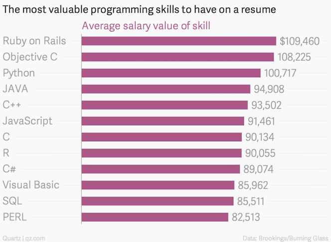
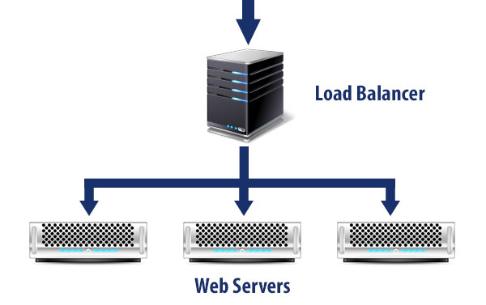

Course Introduction
CS291A
Dr. Bryce Boe
(Bryce is preferred)
September 22, 2016
Presenter Notes
Welcome to CS291A
Please complete this form via your phone or computer:
https://goo.gl/forms/CF1CIeTSymIuMbO73
If that does not work, please write on a piece of paper:
- Name and email address
- Your education level and year (e.g., 2nd year MS)
- What is your prior experience with Internet technology?
- What you hope to gain from this class?
Presenter Notes
About Me
- UCSB CS Alum (BS: 2008, Ph.D.: 2014)
- As a graduate student:
- Taught 3 undergraduate CS courses
- TA-ed for numerous other courses
- Took this course in Winter 2009 (CS290N at the time)
- Taught this course Fall 2015 (CS290B then)
- Senior Software Engineer, Tech Lead @ AppFolio
- 14+ years of web development experience
- First web page using HTML in 1996
- Learned PHP & MySQL around 2002
Presenter Notes
My Teammates "Pear" Programming

Presenter Notes
Today's Agenda
- Course Overview
- Course Motivation
- Course Structure
- Course Grading
- Course Info
- The Life Cycle of a Web Request
- Group Exercise
- Review
Presenter Notes
Pull requests, pull requests, pull requests!

If you notice an issue with or wish to make an improvement to any of the course content (e.g., slides, web pages) please edit them and make a pull request.
Website source:
https://github.com/scalableinternetservices/ucsb_website/
Slide source:
https://github.com/scalableinternetservices/ucsb_website/tree/master/slides
Presenter Notes
Questions and Feedback
At any point during this course:
Stop me to:
- ask a question
- ask for clarification
- provide an additional example
Communicate to me:
- how I can help you succeed in this course
- ideas for making the course more engaging
- any other feedback you may have
Presenter Notes
Course Motivation
Presenter Notes
Thought Experiment #1
How do you find a place to rent?
Presenter Notes
Thought Experiment #1
Presenter Notes
Thought Experiment #2
How do you find your way in a new city?
Presenter Notes
Thought Experiment #2
Presenter Notes
Thought Experiment #3
How do you find someone to date?
Presenter Notes
Thought Experiment #3
Presenter Notes
Internet (or Web) Services!
Each of the problems can be solved by a variety of Internet services.
Every day billions of people use various Internet services to solve problems like these.
What other every day problems are solved by Internet services?
As an Internet service grows in popularity, supporting the increased amount of Internet traffic results in increased complexity of the Internet service.
Presenter Notes


Presenter Notes
Internet Services, what's that?
Presenter Notes
Internet Services, what's that?
There are many application-level protocols that are used to build out Internet Services.
For this class Internet services will refer to HTTP-based services.
The interface to your web service may be the web browser (e.g., Chrome, Firefox), a REST-based API, or both.
Presenter Notes
What about mobile?
Many native mobile apps are backed by Internet services via an API.

High Performance Browser networking details issues with mobile users and offers some optimizations designed for them (HPBN chapters 5 through 8). However, these topics won't be covered in this class.
Presenter Notes
Scalable, what does that mean?
Presenter Notes
Scalable, what does that mean?
An Internet service is scalable if increasing demands can be effectively met with increasing capacity.
Demands could be:
- Web traffic quantity (typical association)
- Dataset size
Presenter Notes
Effectively meet demands: Explanation
- Internet service remains available
- Response time does not excessively degrade
Think about it
Assume you have a web service designed to run on a single server with a plan to use a bigger server when it can no longer effectively meet demand.
Is this scalable?
Presenter Notes
What you will do:
In this course you will learn and utilize some of the technologies behind building large-scale Internet services.
You will test and support to the best of your abilities one or more of:
- Exponential growth in the amount of traffic to your web service
- Exponential growth in the dataset your web service relies upon
Presenter Notes
In Summary
This course won't teach you how to build a web application that obtains worldwide attention and usage.
However, this course will teach you how to build a web application that can respond to worldwide attention and usage.
Presenter Notes
Other Topics
In addition to scaling, we will learn about:
- Performance
- Security
- Agile software development
- Test driven development
- Web clients (e.g., web browsers)
Presenter Notes
Course Structure
Presenter Notes
Lectures and Labs
Lectures
- Meets Tuesday and Thursday from 1--2:50PM in Phelps 3526 (here)
- The lectures and associated reading will cover the concepts you are expected to learn in this class
Labs
- Meets Wednesday from 5--6:30PM in Phelps 3523 (down the hall)
- The labs will focus on the course project
- The labs are mandatory
- During the labs you will:
- Work with your team
- Demo your progress
Presenter Notes
Course Project
You will apply your learnings from this course to your course project. The project entails:
- Working in teams of 4
- Developing an interesting Internet service
- Deploying your service to Amazon EC2
- Measuring your service's performance and scalability
- Applying techniques presented in class to improve your service's performance and scalability
- Documenting these improvements via a detailed write-up and presenting the results at the end of the quarter
Presenter Notes
Course skills
This course is fairly demanding, but is one of the most industry-applicable courses you can take. You will learn and develop the following skills:
- Programming in Ruby
- Building web services using the Rails framework
- Experience with Amazon Web Services (AWS): EC2, S3, CloudFormation
- Load testing Internet services via Tsung
- Test-Driven Development (TDD)
- Agile/Scrum software development
- Development using Git with a feature-branch flow via github pull requests
Presenter Notes
This course is not
a deep-dive into:
- Cloud Computing
- Distributed Systems
- Networking
- Relational Databases
- Security
But we will touch on all of the above.
Presenter Notes
Industry Focused
The skills you learn in this course are the same that I use everyday at work.
The projects will all be open source so if you're proud of your team's work (you should be) then put a link to the project on your résumé.
Industry related tools you will use:
- Git via Github (project source version control)
- Ruby on Rails (development stack)
- Travis CI (automated testing)
- NewRelic (performance metrics)
Presenter Notes
Why Ruby on Rails?
Ruby is an interpreted language, thus it is not terribly fast, nor is very memory efficient.
However, it is very easily scalable, and for most Internet services developer time ($$$) is going to be much more significant than the efficiency of the service.
Building Rails Internet services quickly with zero prior experience makes this class possible.
Presenter Notes
$$$

Source (November 2014): http://qz.com/298635/these-programming-languages-will-earn-you-the-most-money/
Presenter Notes
Texts
"High Performance Browser Networking"
- by Ilya Grigorik
- Available free online
"The Ruby On Rails Tutorial"
- by Michael Hartl
- Available free online
Presenter Notes
Course Grading
Presenter Notes
Project Grade (assigned to your group)
- 30% web service complexity
- 50% load testing and subsequent scaling (explained in presentation and write-up)
- 10% quality of presentation
- 10% quality of write-up
Presenter Notes
Individual Grade
- 5% participation (in-class, on piazza, slide/material corrections)
- 95% Project grade * your relative group project involvement percent
How is relative involvement computed?
- Privately, everyone has 100% to assign between the other members of their group
- The relative percent for each individual is the sum of what their group-mates assign them (can go above 100%)
We will compute these scores three times during the quarter. Only the last score will be used for your grade.
Any moderate deviations from near-equal grades will prompt communication from me.
Presenter Notes
Letter Grades
Final letter grades will be assigned as indicated at:
http://cs291.com/#letter-grades
Presenter Notes
Course Info
- http://cs291.com
- https://github.com/scalableinternetservices/
- https://piazza.com/ucsb/fall2016/cs291a
- Set up email notifications
- It is strongly encouraged for you to respond to questions, and improve upon the "student answer" by making edits.
- For clarifications on existing questions, please make a comment on an existing post
- For related but separate questions, please create a "new post"
Presenter Notes
First Five Weeks
- The basics (HTTP and HTML)
- Industrial software engineering: Agile, TDD, Continuous Integration (CI), Pair Programming
- HTTP Application Server architectures
- High availability via load balancing: a share-nothing web stack
- Client-side and server-side caching
- Relational databases with web applications: concurrency control and query analysis
- Scaling via:
- Sharding
- Service-Oriented-Architecture (SOA)
- Read-slaves
Presenter Notes
Later Course Topics
- Web security: firewalls, https, XSS, CSRF
- HTTP 2.0
- Content-delivery networks
- Non-relational data stores (NoSQL)
- Client-side frameworks
Presenter Notes
Guest Lectures
Hopeful
- Darren Mutz on Challenges with Content Delivery Networks
Principal Software Engineer @ AppFolio
(formerly SDE @ Amazon Web Services) - Sean Maloney on Analyzing Customer Metrics Using AWS
Data Engineer @ Riot Games - Colin Kelley -- CTO @ Invoca
- Jonathan Kupferman -- Former Lead Developer @ Turntable.fm
- Lead Programmer @ reddit
Presenter Notes
TO-DO
By next class
- Join the class on Piazza
- Read chapters 1 and 2 in High Performance Browser Networking
- Read the list of project ideas: http://cs291.com/project_ideas/
- Post or comment on at least one idea on Piazza under the
project_idea"folder"
Before Lab Next Wednesday
- Complete the Ruby Code Academy
- Complete chapter 1 in the Ruby on Rails Tutorial
- Begin chapter 2 in the Ruby on Rails Tutorial
Presenter Notes
Questions / Brief Break
Presenter Notes
The Life Cycle of a Web Request
Presenter Notes
The Two Endpoint Basics
A web browser is a process (at least one) that runs on an operating system. It:
- responds to user input
- renders the display
- utilizes the network
A web server is a process (at least one) that runs on an operating system. It:
- responds to network requests
- loads resources that may come from file system, database, other servers
Presenter Notes
Web Request Life Cycle Group Exercise
Prompt: What things (e.g., events, protocols, actions) (might) occur when someone types https://www.reddit.com in their web browser and presses return.
Part 1 (~10 minutes)
Discuss in pairs, and write down in-order the components you come up with. Start generic, and leave space to provide additional detail for sub-sequences.
Part 2 (~10 minutes)
Merge your pair with a near-by pair. Start by comparing the lists you've come up with, and then write-down your combined lists. (~10 minutes)
Part 3 (as long as it takes)
Alternating people from each larger group, one member will write one of their components on the whiteboard in-place and explain it. At the end we'll should have a pretty definitive list.
Presenter Notes
Core Components of a Web request
- Web server: Opens a TCP socket to listen for requests
- Browser: Makes a DNS query to obtain an IP address for www.reddit.com
- Browser: Establishes a TCP connection to the IP address
- Web server: Accept the TCP connection
- Web server: Add TLS context to the TCP connection
- Browser: Wraps a TLS session on-top of the TCP connection
- Browser: Sends an HTTP request over the TLS session
- Web server: Parse the request, fetch and send the requested resources
Presenter Notes
What about scalability?
Let's add a load balancer in there!

Source: http://www.laymance.com/blog/apache-load-balancers-and-log-files/